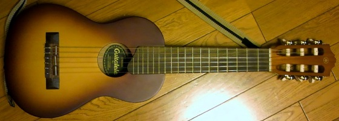
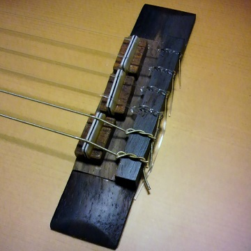
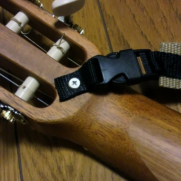
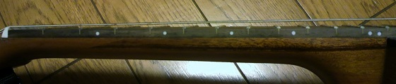

YAMAHA GL1 ギタレレ
2015年06月06日 カテゴリー：ギター関係

YAMAHA GL1 ギタレレを購入しました。弦長は433mm（ギターの約3分の2）で、手の大きな私でも何とか弾けそうです。初期チューニングは通常のギターの5フレットにカポタストをはめた状態と同じです。トラスロッドは入っていませんが、値段のわりには質が良いと思います。早速ですがいろいろと改造しました。
まずチューニングを普通のギターの1オクターブ上のチューニングにしてみました。1弦はナイロン釣り糸0.57mm（東レ 銀鱗 12号）で、2弦～6弦はYAMAHAのクラシックギター弦1弦～5弦を張りました（ナットも作り直しました）。張力は普通のクラシックギターと同じぐらいになると思います。ネックの反りは今のところありません。
チューニングをまた変えることがあるかもしれないので、ブリッジを削り取ってコマを瞬間接着剤で固定する形にしています（色合いが違うところが削り取った部分です）。強度が少し不安ですが…

ウクレレのようにボディを右腕と体で挟んで持つのはちょっと辛いので、ストラップをつけました。おしりの部分に木材（エンドブロック）が入っているので、ストラップピンの取り付けも問題ありません。ヘッド側にはカチャっとはめる部品（ワンタッチバックルというらしい）を取り付けています。ストラップは100円ショップのベルトを加工して使いました。

サイドポジションマークはもともと5フレットと7フレットにあります。3フレット、9フレットと12フレットに追加しておきました。プラスチック棒を埋め込んだだけです。

音については少しはウクレレに近くなったかなと思います。普通のギターと同じチューニングで弾けるので良いです。ただ1弦はしっかりハジかないときちんと鳴ってくれません。音源を録ってみたいと思いますが、なかなか練習時間がなくて厳しそうです。